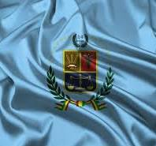

Day 8: Exploring Bolivia

Look at this big, shiny place! This is called the Uyuni Salt Flats in Bolivia. It's like a giant mirror!
Welcome to Bolivia!
Bolivia is a country with very tall mountains and lots of stories from long, long ago. Bolivia has two important cities: one is Sucre, and the other is La Paz.
Big Cities
Bolivia has other big cities too! Santa Cruz is a very busy place, and Cochabamba is where you can find lots of yummy food!
Beautiful Places
In Bolivia, you can see the giant Andes Mountains, the shiny Uyuni Salt Flats, and a big blue lake called Lake Titicaca. So much to explore!
People and Words
The people in Bolivia are very nice, and they speak different languages like Spanish, Quechua, and Aymara. They love to have fun with bright costumes and music during festivals!
Famous People
Some people from Bolivia are very well-known! Evo Morales was a president, and Jaime Escalante was a super teacher who helped kids learn a lot!
La Paz

La Paz is a city in the mountains! It looks like it's sitting inside a big, cozy bowl made of hills.
See the buildings? La Paz is surrounded by huge mountains. It’s a city up high in the sky!
Cochabamba

Cochabamba is like a big garden! It's full of green plants and flowers everywhere.
People in Cochabamba enjoy sunny weather and lots of yummy food. It’s a happy place to be!
Departments, Their Flags, and Capital Cities in Bolivia
| Department | Flag | Capital City |
|---|---|---|
| La Paz |  |
La Paz |
| Cochabamba |  | Cochabamba |
| Santa Cruz |  |
Santa Cruz |
| Potosí |  |
Potosí |
Bolivia's Two Important Cities
Bolivia has two special cities that are like its homes. One city is called Sucre. It’s where important papers are kept. The other city is La Paz. It’s where the president works and helps take care of the country.
This picture shows Sucre and La Paz, the two important cities in Bolivia.
The Big, Shiny Salt Flats
Bolivia has a huge, shiny place called the Uyuni Salt Flats. It’s the biggest salt flat in the whole world! It’s so big that it looks like it goes on forever, like a giant white mirror.

Look at this shiny place! It's the Uyuni Salt Flats, and it's made of lots and lots of salt.
Fun Facts About Bolivia
Did you know that Bolivia has 36 different languages? That’s a lot of ways to talk! People speak Spanish and many other languages that have been spoken for a very long time.
There’s also a big, high lake called Lake Titicaca. It’s so high up in the mountains that boats can float on it even though it’s way up in the sky!
In La Paz, there’s a special market called the Witches' Market. You can find all sorts of interesting things there, like dried llama babies, which people use in special ceremonies.
This picture shows Lake Titicaca, the high lake.!
Did you know?
Bolivia has two capital cities: Sucre is the constitutional capital, while La Paz is the seat of government.
The Uyuni Salt Flats are the largest salt flats in the world, spanning over 10,000 square kilometers.
Bolivia is home to 36 official languages, including Spanish and various indigenous languages.
Lake Titicaca, which Bolivia shares with Peru, is the highest navigable lake in the world.
The Witches' Market in La Paz offers unique cultural items like dried llama fetuses, which are used in traditional Aymara rituals.